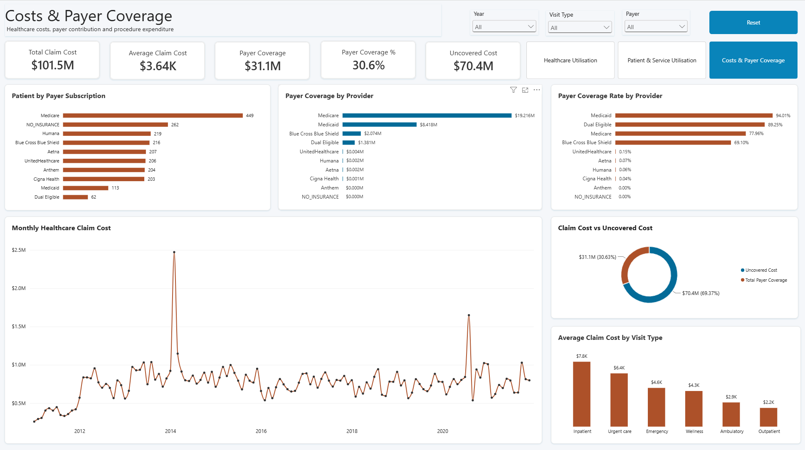

Patient & Service Utilisation
This project explores synthetic hospital encounter data to understand healthcare service utilisation, patient activity, repeat visits, inpatient readmissions, claim costs and payer coverage.
Developed in Power BI, the three-page report brings patient utilisation and financial information into a single interactive dashboard. It demonstrates how data modelling, DAX measures and visual analytics can be used to examine operational patterns, identify unusual trends and support evidence-based questions about healthcare demand and costs.
Business Problem
Healthcare organisations need reliable visibility into how patients use services, how patient visits change over time, and how recorded healthcare costs are distributed across payers and service types. Without a consolidated analytical view, it can be difficult to compare service demand, understand repeat utilisation, investigate unusual changes in activity and assess the relationship between claim costs and recorded payer coverage. The purpose of this project was to transform raw healthcare records into an interactive reporting solution that makes these patterns easier to explore.
Project Objectives
The analysis was designed to answer five key questions:
- How does healthcare utilisation change over time?
- Which visit types account for the greatest service volume?
- How are patients distributed by visit frequency, and what patterns exist in repeat utilisation?
- What patterns appear in inpatient readmissions within a 30-day interval?
- How do recorded claim costs, payer coverage and uncovered costs vary across payers and service types?
Dataset
The project uses synthetic hospital records covering encounters from 2011 to January 2022. The supplied dataset includes approximately 974 patients, 27,900 encounters, 47,700 procedure records, 10 payer records and one hospital organisation. The data includes patient demographics, visit dates and classifications, claim costs, payer coverage, encounter reasons and procedure information. The records are synthetic and are used for portfolio analysis and demonstration. They should not be interpreted as a representation of actual hospital performance or used to draw clinical conclusions.
Tools and Technical Approach
Power BI Desktop was used to prepare the data model, create calculated columns and DAX measures, build interactive visuals and design the report layout.
Data modelling: Patient, payer and organisation information was connected to encounter records, while procedure records were linked to their associated encounters. A date table supports time-based reporting.
DAX: Measures were created to calculate encounter volumes, distinct patients, average visits per patient, repeat utilisation, claim costs, payer coverage and exploratory 30-day inpatient readmission metrics.
Visualisation and interaction:
KPI cards, line charts, stacked bar and column charts, horizontal bar charts and a donut chart were combined with year, visit-type and payer slicers. Page navigation and reset controls make the report easier to explore.
Dashboard Design and Analysis
Page 1 - Healthcare Utilisation Overview

This page provides an executive summary of patient activity and service demand.
Key performance indicators
- Total Patients: Counts distinct patients represented in the selected data.
- Total Visits: Counts recorded visits.
- Average Visits per Patient: Divides total visits by distinct patients to provide an overall utilisation measure.
- Inpatient Visits: Counts visits classified as inpatient.
- Total Claim Cost: Sums the recorded claim costs for the selected reporting context.
Visuals
- Monthly Healthcare Visits: Tracks visit volume over time and highlights changes in demand, including unusual peaks that warrant further investigation.
- Visit Distribution by Age Group and Year (%): Compares the proportion of visits contributed by each age group across years. Age is calculated at the date of visit.
- Visits by Service Type: Ranks visit categories by volume, making differences in recorded service utilisation easy to compare.
- Monthly Active Patients: Shows the number of distinct patients with visits each month, complementing the visit trend.
Page 2 - Patient & Service Utilisation

This page examines repeat visits, service utilisation and an exploratory inpatient re-admission measure.
Key performance indicators
- Total Patients: Counts distinct patients in the current filter context.
- Average Visits per Patient: Summarises visit frequency per patient.
- Patients with Repeat Visits: Counts patients with more than one recorded visit.
- Repeat Visit %: Measures the proportion of distinct patients with repeat visits.
- 30-Day Readmission Rate: Summarises the result of the project's defined inpatient readmission calculation.
Visuals
- Patient Distribution by Visit Frequency: Groups patients into visit-frequency bands, showing the distribution from single visits through to very frequent recorded utilisation.
- Healthcare Utilisation by Year: Uses stacked columns to compare annual encounter volumes and the contribution of each service type.
- 30-Day Inpatient Readmission Rate by Year: Examines inpatient encounters that meet the project's 30-day interval definition.
- Average Visits per Patient by Year: Compares the average number of visits per patient across reporting years.
- Patients with Repeat Encounters by Service Type: Compares the number of patients with repeat visits across service categories.
The readmission metric is exploratory and based on the available synthetic encounter records. It is not presented as an official clinical readmission rate.
Page 3 - Cost and Payer Coverage

This page examines the financial information available in the encounter and payer records.
Key performance indicators
- Total Claim Cost: Sums recorded claim costs.
- Average Claim Cost: Calculates the mean recorded claim cost per encounter.
- Payer Coverage: Sums the recorded amounts attributed to payers.
- Payer Coverage %: Divides recorded payer coverage by total claim cost.
- Uncovered Cost: Calculates the difference between total claim cost and recorded payer coverage.
Visuals
- Patients by Recorded Payer: Shows the number of patients associated with each payer in the encounter records. A patient may be associated with more than one payer over time.
- Payer Coverage by Provider: Compares recorded coverage amounts across payers.
- Payer Coverage Rate by Provider: Compares coverage as a proportion of recorded claim cost for each payer.
- Monthly Healthcare Claim Cost: Tracks changes in recorded claim costs over time and highlights unusual peaks for further investigation.
- Claim Cost: Payer Coverage vs Uncovered Cost: Separates recorded payer coverage from the remaining uncovered portion of claim costs.
- Average Claim Cost by Visit Type: Compares the mean recorded claim cost across visit classifications.
Project Highlights
- Ambulatory visits account for the largest share of recorded visits, followed by outpatient and urgent-care encounters.
- Most patients have more than one recorded encounter, and the visit-frequency analysis identifies a smaller group with very high encounter counts.
- Encounter volumes and active-patient counts vary over time, with particularly prominent peaks around 2014 and 2020.
- The supplied records show that payer coverage represents approximately 30.6% of total recorded claim costs, with the remaining amount classified as uncovered under the project's calculation.
- Recorded coverage amounts and coverage rates differ considerably across payers, suggesting that payer-level results should be examined in the context of the underlying records and measure definitions.
Limitations and Data Considerations
This project uses synthetic data, so its patterns should not be generalised to real healthcare populations or hospital performance. The data contains no recorded visits for patients under 19 based on the calculated age-at-visit field. The age distribution should be interpreted within the limits of the supplied records. The final available period is January 2022, which is only a partial year. Therefore, January 2022 was excluded from full-year trend comparisons where appropriate. The 30-day inpatient readmission measure uses a project-defined calculation and has not been validated against an official clinical reporting methodology. Likewise, recorded payer coverage is not evidence of actual reimbursement.
Skills Demonstrated
- Power BI dashboard design and data visualisation
- Data Modelling
- DAX measures and calculated columns
- KPI development and interactive report design
- Data interpretation, validation and transparent reporting of limitations
Tools: Power BI Desktop, Power Query, DAX
Project Outcome
The completed report provides a consolidated, interactive view of synthetic healthcare utilisation and cost information across three analytical pages. It demonstrates the ability to move from raw records to a structured data model, define meaningful measures, visualise operational and financial patterns, and communicate findings with appropriate caveats. The project is intended as a demonstration of Power BI, analytical reasoning and reporting capability—not as a clinical decision-support tool or an assessment of a real healthcare organisation.
Dataset disclaimer: This report uses demonstration data for portfolio purposes. It is not presented as the operational data or performance of any organisation. The names, records, and figures are illustrative.
Created by: Paula Okafor Dashboard and original report design: © 2026 Paula Okafor. All rights reserved. Dataset: Demonstration data; see disclaimer.